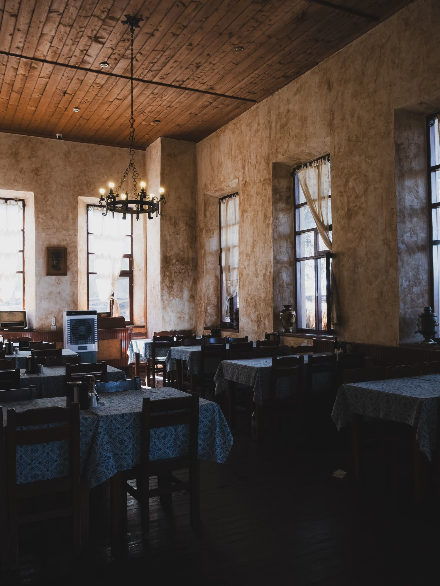

Miraflores 1177 · Puerto Montt
Acá se come desde 1962.
Sesenta y cuatro años en la misma esquina del barrio Chorrillos. Guatitas picantes, ajiaco, cazuelas y carnes a la parrilla, con cantores en las mesas del fondo cuando la noche se pone buena.
- 1962el año que abrió, en esta misma esquina
- 80personas al día pasan por estas mesas, en promedio
- 2finalistas al título nacional de las picadas: ésta y La Campesina de Osorno
- 0direcciones propias en internet: hoy vive en una plantilla gratuita, con dirección prestada
La pieza que ningún competidor puede copiar
Sesenta y cuatro años en la misma esquina.
Ningún restaurante nuevo de Puerto Montt puede mostrar esto, y es exactamente lo que hace que alguien elija esta mesa y no otra. Los hitos que tienen el año en blanco los completa el dueño: son las preguntas que hay que hacerle en la primera conversación.
-
1962
Abre en Miraflores
El local parte en calle Miraflores, en el barrio Chorrillos-Miraflores, con la idea de darle de comer al que trabaja en el puerto.
-
19__
Llega la vitrola
¿Qué año fue? ¿Quién la trajo? Este hito está vacío a propósito: la respuesta la tiene el dueño y vale más que cualquier texto que pudiéramos inventar.
-
19__
El primer cantor
Los cantores populares son parte del local. El primero que se subió a cantar tiene nombre, y ese nombre es la mejor línea de esta página.
-
19__
La segunda generación
Un local de sesenta años cambió de manos al menos una vez. Cuándo y a quién es media historia.
-
Hoy
Finalista a mejor picada de Chile
Cirus Bar y La Campesina de Osorno compitieron por el título nacional de las picadas, en la convocatoria del Ministerio de las Culturas, las Artes y el Patrimonio.
Publicado en cultura.gob.cl
Los años en blanco no son un descuido: son la entrevista pendiente. Cada uno que se llene hace la página más difícil de copiar.

Cuando alguien saca la guitarra, nadie pide la cuenta.
Es lo que separa una picada de un restaurante. No se agenda ni se promete: pasa.
La carta
Cocina criolla, de las que ya casi no quedan.
Los platos de abajo son los que la prensa nombra cuando escribe sobre Cirus Bar. Acá no va ni un precio: publicar un valor que no nos dio el dueño sería inventarlo. Cada plato tiene su casilla esperando el número real.
-
Guatitas picantes
El plato con el que la nombran en todas partes. Picante de verdad, no de adorno.
Precio a confirmar
-
Ajiaco
Caldo de carne, papa y huevo. El plato del día siguiente, y acá se sirve todo el año.
Precio a confirmar
-
Cazuela
De vacuno o de ave según el día. Se pregunta al llegar, como corresponde.
Precio a confirmar
-
Carnes a la parrilla
A la brasa, con lo que la acompañe ese día. El corte lo canta el mesero.
Precio a confirmar
ejemplo Los nombres de los platos salen de notas de prensa, no de la carta del local. La carta real —con sus platos y sus valores— la manda el dueño y entra tal cual.

«Sesenta y cuatro años sirviendo a la misma calle. Eso no se abre: se hereda.»

Las mesas del fondo
El salón es la mitad del plato.
Una picada no se juzga sólo por la olla: se juzga por si uno se queda. En Cirus Bar el argumento son las mesas del fondo, que es donde alguien saca la guitarra y la sobremesa se estira hasta que se acaba la noche.
Lo que hoy no está escrito en ninguna parte es cuántas mesas hay, si el fondo se puede apartar para un grupo y qué noches hay cantores. Son tres preguntas de treinta segundos y las tres caben en esta misma página en cuanto el dueño las conteste.

Chorrillos-Miraflores
Un local de barrio, no un local de centro.
La mesa
Lo que sale de la cocina.


Dónde y cuándo
Miraflores 1177, Puerto Montt.
Cierra domingos y festivos. El resto de la semana está abierto — el horario exacto lo confirma el dueño y va acá arriba, grande, porque es lo que más se busca.
- Dirección
- Miraflores 1177, barrio Chorrillos-Miraflores
- Teléfono
- 9 6231 7070
- Cierra
- Domingos y festivos
- Horario
- Lunes a sábado, 12:00 a 23:00
Reservar una mesa
Complete los cuatro datos y el mensaje queda armado. Desde acá no se envía nada: el botón abre WhatsApp con el texto escrito para que usted lo lea antes de mandarlo.
Sin JavaScript los tres siguen funcionando: el de WhatsApp y el del teléfono son enlaces normales, y el mensaje se escribe a mano. Falta que el dueño confirme que ese número tiene WhatsApp.

Para el dueño
Qué es esto y qué falta.
Qué es
Una propuesta de sitio web hecha por nuestra cuenta. Cirus Bar no la encargó ni la ha revisado. La hicimos con lo que está publicado del local: la dirección, el teléfono, el correo, el año de fundación y la nota de la competencia nacional de picadas.
Qué es ejemplo
Todo lo marcado con borde punteado: el horario exacto, la foto del salón, los años en blanco de la línea de tiempo y la casilla del precio de cada plato. No inventamos nada sobre el negocio que no estuviera publicado — lo que no sabemos queda marcado, en vez de rellenado. El botón verde escribe al 9 6231 7070, el mismo número publicado: hay que confirmar que ese número tiene WhatsApp.
Qué cambiaría la página entera
Tres fotos del local de verdad: la fachada, el salón con gente y un plato saliendo de la cocina. Las de acá son del oficio, no del local, y los dos vídeos de fondo también. Con las suyas, esta página deja de parecerse a cualquier otra.